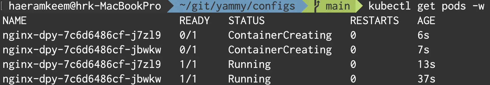
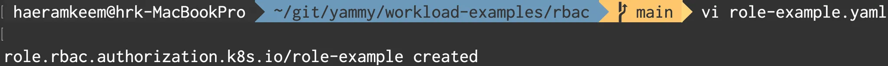
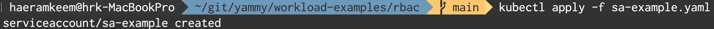
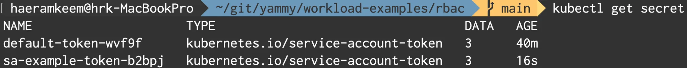
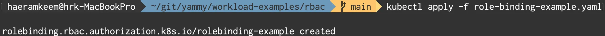
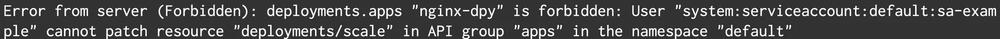

참고한 것들
Role-Based Access Control (RBAC)
- 쿠버네티스의 보안과 관련된 기능
- 보다 보면 Role, RoleBinding 등 여러 가지 용어가 많은데 아래 표 보면 이해가 쉬울듯 하다.
| 범위 (Scope) | 사용자 (User) | 관계 정의 (Relation) | 권한 (Permission) |
|---|---|---|---|
| 특정 Namespace | ServiceAccount (SA) | RoleBinding | Role |
| Cluster (Namespace 전체) | ServiceAccount (SA) | ClusterRoleBinding | ClusterRole |
- 사실 권한과 역할 (Role) 은 좀 다르다.
- 약간 권한들의 집합을 역할이라고 할 수 있는데
- 뭐 단순하게 생각하면 된다: 도서관 사서는 도서관 DB 에 대해 CRUD 가 다 되지만 이용자는 R 만 되는 등의 “역할” 에 따라서 가질 수 있는 “권한들의 집합” 이 달라지는 셈이다.
Role
- 어차피
Role만 생성해주면ServiceAccount를 생성하고RoleBinding으로 연결지어주는거는 별거 아니기 때문에Role을 작성하는 것부터 좀 알아야 한다. - 역할은 권한의 모음이라고 위에서 그랬었는데 공식문서의 표현을 빌리면 여러 권한이 하나의 규칙으로 표현되고 하나의
Role에는 여러개의 규칙들 (rules) 이 들어가게 된다. - 규칙을 명세할때는 약간 문장을 만든다고 생각하면 된다.
- 이게 뭔말이냐
- 하나의 문장에는 주어-동사-목적어가 들어가자네
- 근데 주어는 당연히
ServiceAccount일거기 때문에 동사와 목적어를 적어주면 된다. - 비유를 해보면 “(이 역할을 맡을 놈) 이 (어떤 오브젝트) 에 대해 (무언가) 를 할 수 있다” 일때
- (이 역할을 맡을 놈) 은
ServiceAccount가 되고 - (어떤 오브젝트) 는 규칙 내의
resources항목으로 명세가 되며 - (무언가) 는 규칙 내의
verbs항목으로 명세가 된다.
Example
- 예제를 보고 가자.
apiVersion: rbac.authorization.k8s.io/v1
kind: Role
metadata:
namespace: default
name: pod-reader
rules:
- apiGroups: [""]
resources: ["pods"]
verbs: ["get", "watch", "list"]- 뭐 보다시피
resources와verbs항목에 배열로 값을 넣어야 되는데 - 주의할점은
verbs에"list"는 반드시 있어야 한다: 얘가 없으면apiGroups와resources를 읽어오지 못한다. - 그리고
apiGroups항목은resources에 드가는 (무언가) 들에 대해apiVersion들을 적어주는 부분이다- 간단하게 생각하면 그 (무언가) 가 어떤 manifest 양식으로 선언되어있는 (무언가) 인지 알려주는 역할이다.
- 귀찮게 이게 왜 필요한지 궁금할텐데
- 극단적인 예로 CRD (CustomResourceDefinition) 으로 아무개라는 리소스를 내맘대로 정의했는데
resources에 아무개라고 적어놓으면 얘가 뭐하는놈인지 알지 못하기 때문이다.
apiGroups에""는 Core API 를 의미한다.- 즉,
apiVersion: v1에 속하는 놈들에 대해서는 “v1” 라고 안적어주고 “” 로 적어준다.
- 즉,
RoleBinding
- 얘는 뭐 SA 랑 Role 이랑 엮어주는 놈이기 때문에 별거 없다.
apiVersion: rbac.authorization.k8s.io/v1
kind: RoleBinding
metadata:
name: read-pods
namespace: default
subjects:
- kind: User
name: jane
apiGroup: rbac.authorization.k8s.io
roleRef:
kind: Role
name: pod-reader
apiGroup: rbac.authorization.k8s.iosebjects에 엮을 SA 를 명시하고roleRef에 엮을 Role 을 명시한다.
Practice
- 뭐 블로그 드가봐도 죄다 동일한 예제 소개해주는데 “쿠버네티스 인 액션” 이라는 책에서 나온 예제인듯 하다.
- 우선 간단한 디플로이먼트를 하나 만든다.

- 간단한
Role도 하나 만든다.

- 간단한
ServiceAccount도 하나 만든다.

- 그리고
ServiceAccount만들면 Access Token 이 하나 생성된다.- 주의 : 쿠버네티스 1.24 부터는 SA 를 생성해도 Access Token 이 자동으로 생성되지 않는다
- 실습 당시에는 EKS 에서 1.24 를지원하지 않아서 어쩔 수 없이 이전 버전으로 했으나 알아두길
kubectl describe로 토큰 값 복사해놓자.
- 주의 : 쿠버네티스 1.24 부터는 SA 를 생성해도 Access Token 이 자동으로 생성되지 않는다

- 그리고 이 명령어를 통해서
$HOME/.kube/config를 수정한다 (직접 수정해도 된다).
kubectl config set-credentials $SA_NAME --token $TOKEN- 그리고 이 명령어를 통해서 Context 를 생성한다.
- 클러스터 이름은
kubectl config get-clusters로 알아낼 수 있다.
- 클러스터 이름은
kubectl config set-context $CONTEXT_NAME --cluster $CLUSTER_NAME --user $SA_NAME- 그리고 간단한
RoleBinding도 하나 만든다.

- 위에서 만든 Context 로 전환한다.
kubectl config use-context $CONTEXT_NAME- 이제 SA 를 확인해보자.
- 실습에서 사용한 Role 은 다음과 같은데
apiVersion: rbac.authorization.k8s.io/v1
kind: Role
metadata:
namespace: default
name: role-example
rules:
- apiGroups: ["", "apps"]
resources: ["pods", "deployments"]
verbs: ["get", "list", "edit"]- 보면 파드와 디플로이먼트에 대한 읽기 권한만 있는 것을 알 수 있다.
- 그래서
scale와 같은 변경 작업을 하면 다음과 같이 에러가 난다.
